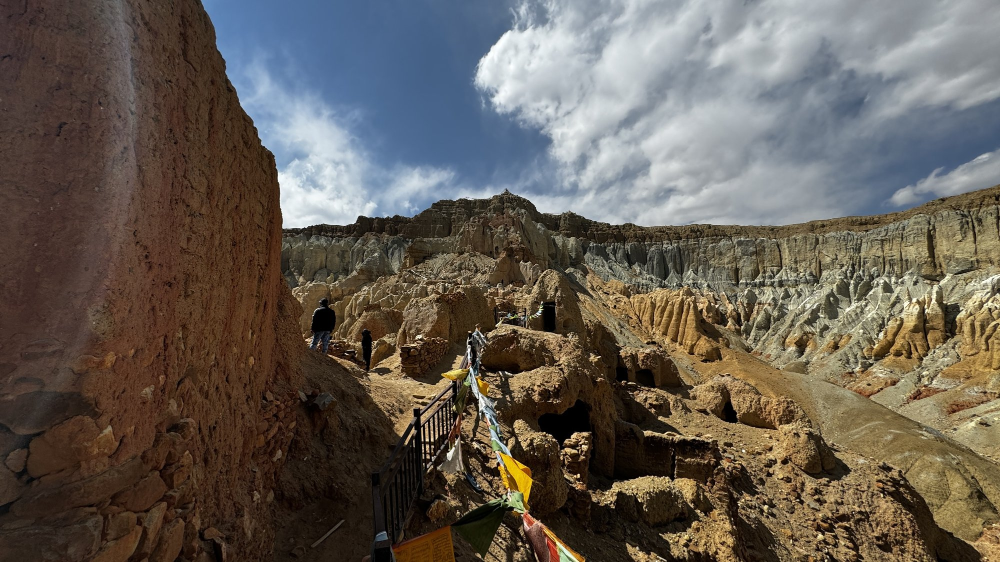
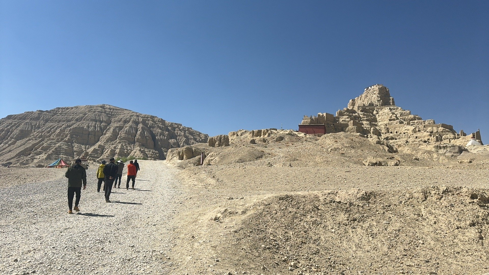
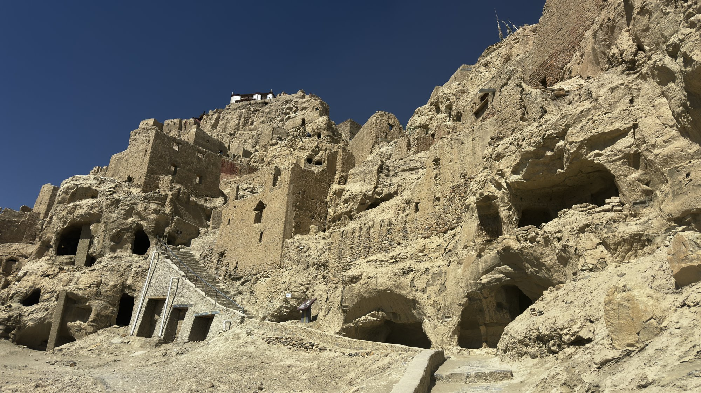
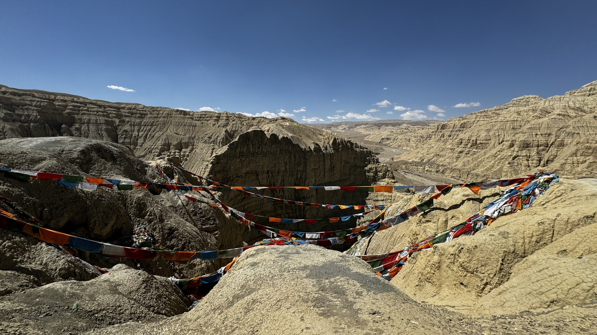

时间的雕刻 · 消失的王朝
扎达土林
古格王朝
亿万年的地质奇观，三百年前的神秘王朝
时间的雕刻 · 消失的王朝
亿万年的地质奇观，三百年前的神秘王朝

绵延的土林如古城堡群，在高原上矗立
扎达土林，是亿万年前喜马拉雅造山运动与流水侵蚀共同作用形成的地质奇观。连绵数百公里的土林，形态万千，如城堡、如塔楼、如巨柱，被风蚀成一片"土林"的森林。
站在高处远眺，土林在高原的阳光下泛着金黄的光泽，仿佛一座被时间凝固的巨大城池，壮丽而苍凉。

古格王朝遗址，一段被遗忘的历史
在土林的怀抱中，静静矗立着古格王朝遗址。古格王朝兴起于公元10世纪，曾是西藏西部强盛一时的政权，创造了灿烂的文化与艺术。
然而，这个盛极一时的王朝却在17世纪一夜之间神秘消失，留下金碧辉煌的宫殿遗址与无数未解之谜，静静等待后人的探寻。



